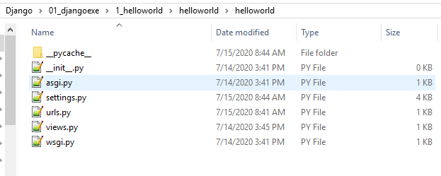
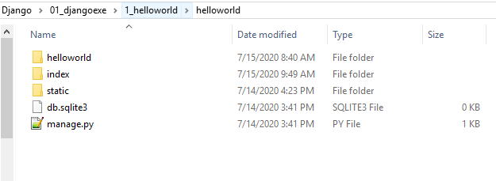
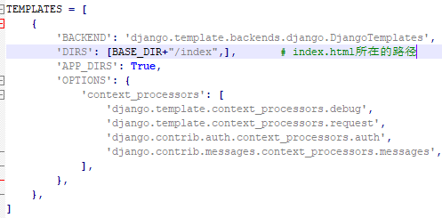
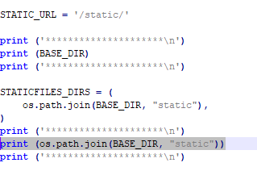
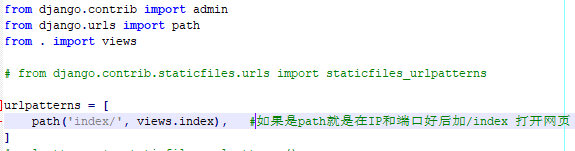
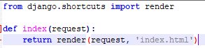
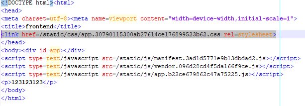

Vue+Django搭建前后端方法
1 简介
1.1 Vue
Vue (读音 /vjuː/，类似于 view) 是一套用于构建用户界面的渐进式框架。与其它大型框架不同的是，Vue 被设计为可以自底向上逐层应用。Vue 的核心库只关注视图层，不仅易于上手，还便于与第三方库或既有项目整合。另一方面，当与现代化的工具链以及各种支持类库结合使用时，Vue 也完全能够为复杂的单页应用提供驱动。
如果你想在深入学习 Vue 之前对它有更多了解，我们制作了一个视频，带您了解其核心概念和一个示例工程。
如果你已经是有经验的前端开发者，想知道 Vue 与其它库/框架有哪些区别，请查看对比其它框架。
1.2 Django 简介
Django是一个开放源代码的Web应用框架，由Python写成。采用了MTV的框架模式，即模型M，视图V和模版T。它最初是被开发来用于管理劳伦斯出版集团旗下的一些以新闻内容为主的网站的，即是CMS（内容管理系统）软件。并于2005年7月在BSD许可证下发布。
2 安装方法
2.1 Vue
- 首先安装Node.js，安装成功后命令行 npm -v 显示版本号，验证安装成功。
- npm install -g @vue/cli 安装vue 和脚手架（框架），命令行vue -V显示版本号验证安装成功。
2.2 Django 的安装
命令行或者终端中输入： Python3 -m pip install django
3 Vue创建前端静态页面
3.1 创建脚手架
- Vue 版本 >=2 ： vue create [options]
- Vue 低版本 ： ** npm install -g @vue/cli-init ; vue init webpack [app-name]**
3.2 运行和打包
- 建立文件夹后，在文件夹中运行 npm install 安装所需的库
- npm run dev 开启本地端口，查看网页。
- npm run build 打包。打包完成后如果直接运行dist中的index，可能无法显示页面
此时，如果直接运行dist文件夹中的.html文件，页面将无法加载static文件夹中的文件，如果想本地打开需要修改html文件中的加载路径（href）。两种方法：
- npm install -g http-server，然后打开config文件夹下面的index.js，修改 assetsPublicPath: '/' => assetsPublicPath: './'。
- 直接修改index.html文件中的路径 即：href=./static/css/app.30790115300ab27614ce176899523b62.css rel=stylesheet，即增加第一个“ .”。
4 Django框架
4.1 App的创建
命令行或终端输入django-admin start project，在helloworld下生成app的框架，其文件如下：

4.2 静态文件配置
- 将Vue打包好的dist文件夹中的index文件放到manage.py 同级目录，并将static文件夹也拷贝到同级目录。
- 
- 配置settings.py

- urls.py

- 创建views.py

- index.html文件

关键问题
静态文件的路径设置
静态文件路径设置很关键，否则页面加载不上去。